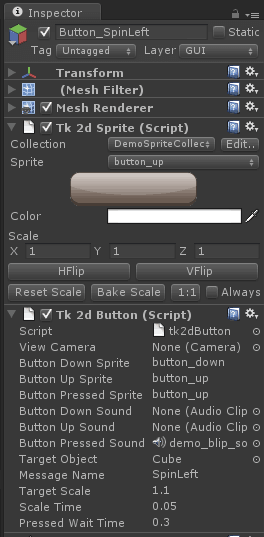

Documentation
Script Reference
Forum
Documentation
Script Reference
Forum
The tk2dButton script is an example of how to create a button using 2D Toolkit. While it is a functional button, but you will probably need to modify this script to fit in to the rest of your project. Check demo 6 - button and 3d sprites for them in action.

In order to use this script, follow these instructions: * Create a Sprite and select your initial button sprite. * Add the tk2dButton behaviour to this Game Object. * Camera doesn't need to be set if your button is a child of your GUI camera. Otherwise, point it to the camera which will display your button. If you only have one camera in the scene, you may leave this blank. * Rename "Button Down Sprite" and the others to refect the sprite names you wish to use.
Button Down - Button is being clicked
Button Up - Button is no longer being clicked
Button Pressed - Button has been pressed.
Attach appropriate sounds if you wish, but you will need to attach an AudioSource behaviour if you need it to play sound.
Target Object & Message Name - the target object to send the message.
Target Scale - How much the button scales by when the cursor hovers over it
Scale Time - How long it takes to reach this scale
Pressed Wait Time - How long it waits before allowing the user to press it again
The button class has had many more improvements under the hood. Check here for more information